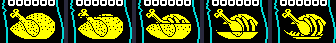
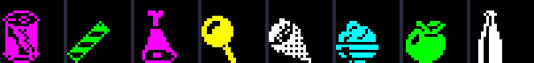
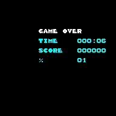
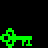
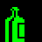
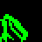
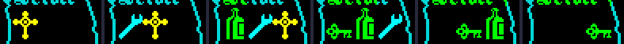
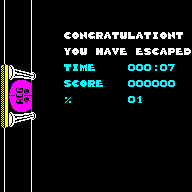

| Food, health and the A.C.G. key |
The knight, the wizard or the serf is trapped in the castle with a life force that runs down, and gets out through the great door in the starting room with the three pieces of the A.C.G. key -- carried in the right order. This page follows the life force, food, dying, the objects and the three-slot inventory, and the key, and ends with a win played through the game's own code in SkoolKit's simulator. The first game after loading always hides everything in the same places (FRAMES is frozen on the title screen), so the rooms named here are that game's.
One byte, FOOD_LEVEL, 240 at the start of each life, drawn as the roast on the scroll. What takes it away, the amounts read from the code:
| Cause | Where | Units | Death |
|---|---|---|---|
| time | PLAYER_TICK, on every frame of a pass when TICKS AND 15 is 0 | 1 | when it reaches 0 |
| a small creature's touch | LOSE_FOOD_THIRTY_TWO | 32 | at 0 or below |
| the mummy, Dracula, the devil or Frankenstein's monster, a pass in contact | LOSE_FOOD_EIGHT | 8 | only when it goes below 0 |
| the humpback, a pass in contact | LOSE_FOOD_SIXTEEN | 16 | only when it goes below 0 |
| standing on a mushroom, a pass | MUSHROOM_DRAIN | 1 | when it reaches 0 |
The time drain's gate counts passes of the main loop, not frames, and stays open for every frame of the pass on which it is true, so it takes one or two units in sixteen passes. Standing in room $00 with creatures kept away, the knight lost 59 units in 20.2 seconds (611 passes): a full 240 lasts about 82 seconds with nothing else happening.
DRAW_FOOD redraws the roast only when the level crosses a multiple of eight: the whole roast with rows taken off its top, one per eighth, over the picture of the bones. The scroll's roast at 240, 180, 120, 60 and 16, drawn by DRAW_FOOD:

The roast at five levels.
One quirk: LOSE_FOOD_EIGHT and LOSE_FOOD_SIXTEEN die only on a borrow, so a touch that leaves exactly 0 is survived, and if the next thing to happen is the time drain its DEC A turns 0 into 255 -- a full roast and more. Staged: the life force set to 8 and the devil put on the knight in room $00. It went 8 → 0 → 255 → 254: the touch left 0, the devil was then sent away, and the next drain made it 255. (Another touch at 0 would have killed: 0 - 8 borrows.)
Eighty pieces, ten each of eight kinds, $50-$57, each with its room. EAT_FOOD: when the player is within 12 pixels, the food is rubbed out, its slot emptied, a sound started, and 64 added to the life force, capped at 240. The eight kinds, drawn by the game:

Food $50-$57.
| Life force before | Food | Worked out | Life force two frames later | The food's record |
|---|---|---|---|---|
| 100 | $50 at the knight's feet (staged) | 164 | 164 | empty |
| 200 | $50 at the knight's feet (staged) | 240 | 239 | empty |
Where the two differ by one, the time drain took its unit in the same frames.
Eaten food grows back. REGROW_FOOD runs when TICKS is a multiple of 512: it steps a cursor on to the next of the eighty food slots, and if that slot is empty and not in the player's room refills it with kind $50 + (FRAMES AND 7), in its old place. Staged: the food slot at $EB58 (room $27) emptied, the cursor put just before it and TICKS just before a multiple of 512; two passes later the slot held $54. A round of all eighty takes 40,960 passes, about half an hour.
Sixteen mushrooms are the other way round. MUSHROOM: while the player is within 12 pixels it takes a unit a pass and makes the caught sound; when the life force runs out the mushroom is rubbed out too and the life is lost. There is no in-play test, so it drains a rising player as well. Staged in room $50 with the knight on its first mushroom: 45 units in 40 passes, one a pass and the rest the time drain.
LOSE_LIFE: with no lives left, GAME_OVER; otherwise one fewer, and the player's sprite becomes $67, sinking. DYING lowers the figure a row on three frames in four; at the bottom DROP_GRAVESTONE leaves a gravestone ($8F) in the first free of four slots, and PLACE_PLAYER starts the next life in the same room: the score flashes for 104 frames (FLASH_SCORE), then MATERIALISING raises the figure a row every four frames. Followed with the life force set to 1 in room $00 (staged), the phases, in frames:
| Phase | Frames |
|---|---|
| sinking | 25 |
| waiting, the score flashing | 104 |
| rising | 77 |
Lives went from 3 to 2, and a gravestone record appeared at $EAE8. The spot where he died, at frames 2, 8, 14, 20, 27, 131, 146, 161, 176, 191, 1 after the fatal drain: sinking, the gravestone while the score flashes, rising, and in play:
Sinking, the gravestone, rising.
While sinking or rising the player is not in play: nothing can touch him, and the small creatures in the room are destroyed for 155 points each (see the monsters). START_GAME sets LIVES to 3, and a death at 0 is the end: four lives in all. Staged with LIVES 0 and the life force at 1, GAME_OVER blanked the play area and printed its summary, then waited in END_DELAY -- about ten seconds -- before the title:

The game over screen.
Eighteen collectables, $80-$8E, each a record with its room. Where the first game puts them (read from the running game once START_GAME has run), what they look like (drawn by the game) and what reads them:
| Sprite | Record | Colour | Room | What it is for | |
|---|---|---|---|---|---|
| $8C | $EAA8 | yellow | room $17 | the A.C.G. key's first piece (ACG_DOOR) | |
| $8D | $EAB0 | yellow | room $10 | the second piece | |
| $8E | $EAB8 | yellow | room $2B | the third piece | |
 | $81 | $EAC0 | green | room $22 | opens the locked doors of its colour (DOOR_NEEDS_KEY) |
| $81 | $EAC8 | red | room $85 | opens the locked doors of its colour (DOOR_NEEDS_KEY) | |
| $81 | $EAD0 | cyan | room $91 | opens the locked doors of its colour (DOOR_NEEDS_KEY) | |
| $81 | $EAD8 | yellow | room $66 | opens the locked doors of its colour (DOOR_NEEDS_KEY) | |
| $80 | $EAE0 | red | room $09 | the mummy walks to it and sends it to room $6B (MOVE_MUMMY) | |
| $8A | $EB08 | yellow | room $05 | carried, Dracula runs from the player (MOVE_DRACULA) | |
| $8B | $EB10 | cyan | room $30 | carried, touching Frankenstein's monster kills him (MOVE_FRANKENSTEIN) | |
 | $82 | $EB18 | green | room $3B | nothing but the humpback (MOVE_HUMPBACK) |
| $83 | $EB20 | cyan | room $48 | nothing but the humpback (MOVE_HUMPBACK) | |
| $84 | $EB28 | yellow | room $64 | nothing but the humpback (MOVE_HUMPBACK) | |
| $85 | $EB30 | cyan | room $6B | nothing but the humpback (MOVE_HUMPBACK) | |
 | $86 | $EB38 | green | room $13 | nothing but the humpback (MOVE_HUMPBACK) |
| $87 | $EB40 | magenta | room $84 | nothing but the humpback (MOVE_HUMPBACK) | |
| $88 | $EB48 | red | room $1F | nothing but the humpback (MOVE_HUMPBACK) | |
| $89 | $EB50 | white | room $49 | nothing but the humpback (MOVE_HUMPBACK) |
The eight at $EB18 have no reader but the humpback's search, which takes them away for good (SCAN_COLLECTABLES); FIND_CARRIED's callers ask only for the keys, the crucifix and the spanner.
The inventory is three slots of four bytes at CARRIED ($5E30), newest first. PICK_UP, when SYMBOL SHIFT is held and this press has not been used, the player in play and within 12 pixels: DROP_CARRIED puts the third slot's object back at the player's feet, SHIFT_CARRIED moves the other two along, and REMEMBER_CARRIED puts the new one in front and empties its record. PUT_DOWN, run every pass by the drop controller, does the same on a press with nothing underfoot, but with slot one left empty: so a press on nothing moves the queue along, and an object only falls out when pushed past the third slot. Pressed for real, in room $00, with each object put at the knight's feet first:
| Step | Slots after (newest first) | Also |
|---|---|---|
| the crucifix put at his feet (staged), SYMBOL SHIFT pressed | $8A, empty, empty | |
| the spanner put at his feet (staged), SYMBOL SHIFT pressed | $8B, $8A, empty | |
| object $82 put at his feet (staged), SYMBOL SHIFT pressed | $82, $8B, $8A | |
| the green key put at his feet (staged), SYMBOL SHIFT pressed | $81, $82, $8B | the crucifix is back on the floor: room $00 at ($60, $68), the knight at ($60, $68) |
| walked twelve frames away, SYMBOL SHIFT pressed on nothing | empty, $81, $82 | $8B fell at his feet: room $00, ($7B, $68) |
| walked twelve frames away, SYMBOL SHIFT pressed on nothing | empty, empty, $81 | $82 fell at his feet: room $00, ($7D, $82) |

The scroll's three slots after each step.
Three collectables, $8C, $8D and $8E. PLACE_ACG_KEY hides them when a game starts: (FRAMES + TICKS) AND 7 picks one of eight sets of three rooms in KEY_ROOM_SETS, written into the pieces' records in the template before it is copied. TICKS is 0 then and FRAMES the same value PLACE_KEYS uses, so the set's number is the green and red keys' index too: at most eight arrangements of those three together. The eight sets:
The great door is one record of type $24, one half in room $00's east wall and one in room $8E. ACG_DOOR reads the sprite in each inventory slot in turn and wants $8C, $8D, $8E -- newest first, so $8E must be picked up first -- and then opens with a doorway of 24 by 32 (it is in a side wall); otherwise it shuts and is only drawn. Staged in the inventory, two passes each way:
| Slots, newest first | The door |
|---|---|
| $8C, $8D, $8E | open |
| $8E, $8D, $8C | shut |
And played: the three pieces put at the knight's feet in room $00 one at a time, $8E, then $8D, then $8C, and SYMBOL SHIFT pressed for each -- leaving $8C, $8D, $8E in the slots -- then W held. He walked through the door in 27 frames into room $8E, a passage; MAIN_LOOP ends every pass by comparing the player's room with $8E and jumping to SHOW_END_SCREEN. The same pieces picked up the other way round left $8E, $8D, $8C in the slots, and the knight stopped at x $8E, against the shut door. The end screen, as the game drew it:

The end of the game.
The first line ends in $D4, T with the end marker, where S ($D3) was meant (see the bugs). Winning adds nothing to the score.
TICK_CLOCK counts hours, minutes and seconds from the start of the game, subtracting 50 from FRAMES each second -- so FRAMES stays under 50 in play -- and stops while the game is paused. The score, six BCD digits, has two sources only: KILL_MONSTER adds 155 for every small creature destroyed, and MOVE_FRANKENSTEIN 1000 for Frankenstein's monster killed with the spanner. The win above -- the pieces having been put at the knight's feet -- ended at 0:00:07 with a score of 0. The end screens' third figure is COUNT_ROOMS_EXPLORED's: two for every three rooms whose bit is set in ROOMS_SEEN, plus one, in BCD, shown with a percent sign. Run with that many bits set:
| Rooms seen | Figure |
|---|---|
| 1 | 1 |
| 2 | 1 |
| 3 | 3 |
| 4 | 3 |
| 30 | 21 |
| 75 | 51 |
| 100 | 67 |
| 148 | 99 |
| 149 | 99 |
So any 147 rooms or more make 99, the most two BCD digits hold. The win above, having seen rooms $00 and $8E, showed 1.
Inferred, or not tried: